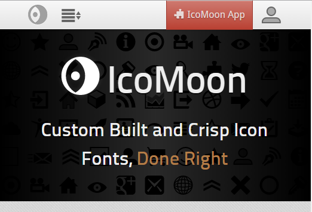
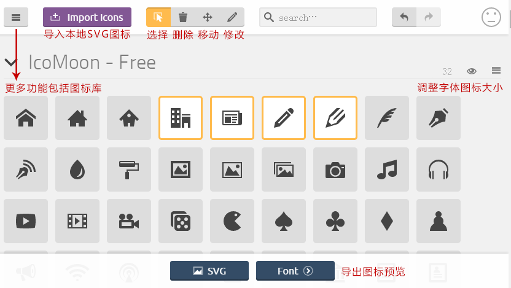

IcoMoon 开源字体图标
IcoMoon提供600+字符，您可以根据自己需求定制；可以导入其他字体，也进行特别定制；定制字体提供打包导出功能，兼容IE6+，现代浏览器以及各类手机设备，且有demo实例，并对字符进行了HTML转化。可谓图标字体一条龙服务，又称“图标解决方案”！
-

-

-

-

-

-

-

按钮组合
使用下面列出的类可以快速创建一个带有预定义样式的按钮。
使用说明与演示
1.进入主页，点击下图右上角的"IcoMoon App"开始使用：
2.操作如下图所示
源代码引用
第一步：使用font-face声明字体
@font-face {font-family: 'icomoon';
src: url('../fonts/icomoon.eot'); /* IE9*/
src: url('../fonts/icomoon.eot?#iefix') format('embedded-opentype'), /* IE6-IE8 */
url('../fonts/icomoon.woff') format('woff'), /* chrome、firefox */
url('../fonts/icomoon.ttf') format('truetype'), /* chrome、firefox、opera、Safari, Android, iOS 4.2+*/
url('../fonts/icomoon.svg#uxicomoon') format('svg'); /* iOS 4.1- */
}
第二步：定义使用icomoon的样式
.icomoon{
display:inline-block;
font-family: 'icomoon' !important;
font-size:16px;
speak: none;
font-style: normal;
font-weight: normal;
font-variant: normal;
text-transform: none;
line-height: 1;
vertical-align: middle;
*vertical-align: top;
/*CSS3中用于webkit引擎(如chrome)中设置字体的抗锯齿或者说光滑度的属性。 */
-webkit-font-smoothing: antialiased;
-moz-osx-font-smoothing: grayscale;
}
第三步：挑选相应图标并获取字体编码，应用于页面
<i class="icomoon"></i>